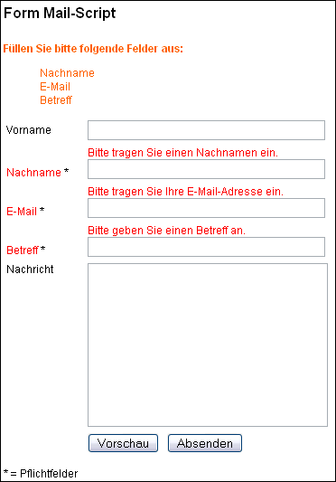

Unser Programm Schedule Organizer ermöglicht den Kunden, Patienten oder Mandanten die Terminreservierung über die Homepage der Firma, ihres Arztes oder ihres Beraters. Das PHP-Script erleichtert und automatisiert die Terminverwaltung - die zuständigen Mitarbeiter werden entlastet, denn es müssen weniger Telefonanrufe entgegen genommen oder weniger Faxe und Briefe beantwortet werden.
Vielen Dank für Ihr Interesse an unserem Tell-A-Friend-Script. Wir empfehlen Ihnen, sich Zeit für die Lektüre dieser Anleitung zu nehmen.
Das Tell-A-Friend-Script ermöglicht Ihnen, Ihre Website von den Besuchern weiterempfehlen zu lassen. Dazu werden Informationen aus dem Formular und der URL der Seite per E-Mail an einen Empfänger gesandt.
Bitte achten Sie darauf, dass Sie alle Dateien im Text-Modus (ASCII-Modus) auf Ihren Server kopieren.
Die E-Mails können sowohl im Text- als auch im HTML-Format versendet werden. Darüber hinaus verfügt das Script über mehrere Sicherheitsfunktionen um den Missbrauch durch Dritte zu verhindern. Außerdem bietet das Script die Möglichkeit, alle versandten Nachrichten mitzuloggen.
Das Layout von Formular und E-Mail lässt sich mit Hilfe von Templates nach Ihren Wünschen anpasse
Es ist wichtig, dass das Script entweder über einen Link oder über ein Formular auf ihrer Website aufgerufen wird. Aus Sicherheitsgründen wird dabei die Verweisseite überprüft und mit den Angaben der Script-Konfiguration verglichen. Bei Übereinstimmung wird das Script ausgeführt.
Das Script ist für den direkten über einen Link und für den indirekten Aufruf über ein bestehendes Formular ausgelegt. Beim direkten Aufruf des Scripts wird die Datei index.php direkt verlinkt und die darin voreingestellten Templates (HTML und Mail) verwendet.
Beim indirekten Aufruf wird das Script durch ein bereits bestehendes Formular in einer HTML-Seite aufgerufen. Durch diese Methode können Sie mehrere Formulare in Ihrer Seite mit demselben Script versenden. HTML- und Mail-Templates sowie alle weiteren Parameter für das Script können mit Hilfe von Hidden-Formularfeldern im HTML-Formular definiert werden.
Durch die indirekte Methode können Sie Ihre bestehenden Kontaktformulare ohne aufwändige Änderungen mit diesem Script weiter betreiben.
Das HTML-Template wurde nach den Spezifikationen für XHTML 1.0 erstellt. Deshalb enthalten alle einfachen Tags (<br> oder <input>) einen abschließenden Slash (<br /> oder <input type=“text“ name=“feld“ />).
Achtung: Wenn Sie folgende Fehlermeldung beim Aufruf des Scripts erhalten - 'Falscher oder leerer Referrer (Verweisseite)!' - dann müssen Sie in der Datei 'index.php' in die Variable '$referring_server' Ihren Servernamen (also Ihre Domain mit und ohne www und am besten auch die IP-Adresse) eintragen.
Beispiel:
$referring_server = 'www.example.com, example.com, 192.0.34.166';
Für den Fall, dass Sie alle Daten korrekt eingegeben haben und trotzdem diese Fehlermeldung erhalten, stellen Sie bitte sicher, dass Sie das Script über einen Link von Ihrer Website aus aufrufen.
Weitere Variablen in der Datei "index.php":
| $script_root | Standardmäßig enthält diese Variable folgenden Wert: "./". Das bedeutet, dass alle Pfade im Script-Verzeichnis beginnen. Sie können den Pfad ändern, wenn Sie das Script an anderer Stelle Ihrer Website einbinden (include) möchten.
|
|
| $allow_empty_referer | Einige Programme auf Seiten des Benutzers können die Anzeige des Referrers (Verweisseite) verhindern, wie zum Beispiel Firewall-Software oder Web-Browser. Sie können den Zugang mit leerem Referrer verhindern, wenn Sie die Variable auf "no" setzen oder erlauben, wenn Sie die Variable auf "yes" setzen.
|
|
| $language | Tragen Sie hier das Kürzel für die Sprache ein (z.B.: de oder en). Welche Sprachen verfügbar sind können Sie im Verzeichnis 'languages’ herausfinden.
|
|
| Die folgenden Funktionen sollen die die Missbrauchsmöglichkeit des Scripts durch Dritte (Spammer) einschränken. Sie können die Anzahl der gesendeten E-Mails an die E-Mail-Adresse des Benutzers, an die E-Mail-Adresse des Empfängers oder/und an die IP-Adresse des Benutzers koppeln.
|
||
| $ip_banlist | In dieser Variable können Sie IP-Adressen von Servern eintragen, die Sie von der Nutzung des Scripts ausschließen möchten. Wenn Sie diese Funktion nicht nutzen möchten, lassen Sie die Variable einfach frei.
|
|
| $sender_count | Sie können bestimmen, wie oft und innerhalb welchen Zeitraums E-Mails mit der selben E-Mail-Adresse als Absender versandt werden können. Tragen Sie dazu die Anzahl der E-Mails mit der selben Absender-E-Mail (0 schaltet die Funktion ab) ein.
|
|
| $sender_duration | Angabe des Zeitraums in ganzen Stunden (1, 2, 5, 10, 20, 300). Nach Ablauf kann die E-Mail-Adresse wieder als Absender benutzt werden.
|
|
| $recipient_count | Sie können - analog zu oben - bestimmen, wie oft und innerhalb welchen Zeitraums E-Mails an dieselbe E-Mail-Adresse als Empfänger versandt werden können. Anzahl der E-Mails mit derselben Empfänger-E-Mail (0 schaltet die Funktion ab).
|
|
| $recipient_duration | Angabe des Zeitraums in ganzen Stunden (1, 2, 5, 10, 20, 300).
|
|
| $ip_address_count | Als dritte Möglichkeit können Sie die Anzahl der gesendeten E-Mails an die IP-Adresse des Benutzers koppeln. Analog den beiden oberen Möglichkeiten können Sie die Anzahl der E-Mails und die Dauer festlegen. Anzahl der E-Mails mit der selben IP-Adresse (0 schaltet die Funktion ab).
|
|
| $ip_address_duration | Angabe der Dauer in ganzen Stunden (1, 2, 5, 10, 20, 300).
|
|
| Wenn eine dieser drei Sicherheits-Funktion aktiviert wird, wird auch gleichzeitig die Log-Funktion eingeschaltet. Stellen Sie deshalb sicher, dass der Ordner 'log' und die Log-Datei ('log/logfile.txt') Schreibrechte besitzen (chmod 777).
|
||
| $show_limit_errors | Hat ein Benutzer die maximale Anzahl seiner erlaubten E-Mails erreicht, können Sie ihm eine Fehlermeldung anzeigen.
|
|
| $log_messages | Hier schalten Sie die Logging-Funktion der E-Mails ein beziehungsweise aus. Wollen Sie die Funktion nutzen, stellen Stellen Sie deshalb sicher, dass der Ordner 'log' und die Log-Datei ('log/logfile.txt') Schreibrechte besitzen (chmod 777).
|
|
| $text_wrap | Diese Variable enthält die Anzahl der Zeichen, nach der die Zeilen in der E-Mail umbrochen werden. Wird kein Wert angegeben, wird kein Zeilenumbruch eingefügt.
|
|
| $show_error_messages | Bei Auslieferung des Scripts ist diese Variable standardmäßig auf 'yes' gesetzt. Das hat zur Folge, dass Sie bei der Konfiguration des Scripts Fehlermeldungen und Hinweise zur Einrichtung des Scripts erhalten. Sobald aber das System funktioniert können Sie die Ausgabe der Meldungen abschalten. So verwehren Sie allzu neugierigen Besuchern den Einblick in das System.
|
|
| $path['logfile'] | Diese Variable enthält den Pfad zur Log-Datei für die E-Mail-Mail-Nachrichten.
|
|
| $path['templates'] | Diese Variable enthält den Pfad zu den Template-Dateien (HTML und Mail). Der Pfad kann relativ (./templates/ oder templates/) und absolut (z.B.: /usr/local/etc/httpd/.../tell_a_friend/templates/ oder /kunden/homepages/.../.../htdocs/tell_a_friend/templates/) angegeben werden (immer mit Slash am Ende).
|
|
| $file['default_html'] | In dieser Variable ist das Template gespeichert, dass beim Aufruf für das Layout verwendet wird.
|
|
| $file['default_mail'] | Diese Variable enthält den Namen des Mail-Templates, wenn im HTML-Formular kein Mail-Template definiert wurde.
|
|
| $add_text | Sie können weitere Werte, Text, Variablen oder andere Inhalte an dieser Stelle festlegen. Diese Inhalte können Sie dann mit Hilfe von entsprechenden Markierungen in geschweiften Klammern in die Templates übertragen.
|
Wenn Sie eigene Werte in der Variable $add_text hinzufügen folgen Sie bitte dem Muster, dass durch die beiden Beispieleinträge deutlich gemacht wurde.
$add_text = array(
'txt_additional' => 'Additional',
'txt_more' => 'More'
);
Der erste Teil eines Eintrags (z.B.: txt_additional) stellt den Namen der Platzhalter im Template dar. Wenn Sie also den Wert von txt_additional im Template anzeigen möchten, tragen Sie dort den Namen umschlossen von geschweiften Klammern ein - {txt_additional}. Der Name darf keine Leer- oder Sonderzeichen enthalten. Erlaubt ist nur der Unterstrich.
Die Template-Datei ist eine simple HTML-Datei und kann auch dementsprechend editiert werden. Mit Hilfe von HTML und CSS können Sie das Layout Ihren Wünschen anpassen.
Sollten Sie für die Anpassung WYSIWYG-Editoren wie Dreamweaver, Frontpage oder NetObjects Fusion verwenden, achten Sie bitte darauf, dass die Software keine eigenmächtigen Veränderungen vornimmt. Die Funktionsweise des Scripts könnte sonst beeinträchtigt werden.
Im Unterverzeichnis 'examples' befinden sich weitere HTML-Formulare. Diese sollen für Sie als Beispiele für die Erweiterung und Anpassung Ihres eigenen Formulars dienen. So haben Sie bei Benutzung des Templates 'alternative_form.tpl.html' die Möglichkeit, den Benutzer auswählen zu lassen, ob er die gerade besuchte Seite oder die Startseite empfehlen möchte. Und im Template 'advanced_form.tpl.html' sind Beispiele zur Verwendung von Checkboxen, Radio-Buttons und Auswahlmenüs aufgeführt.
In den Templates befinden sich Markierungen/Platzhalter in geschweiften Klammern, wie zum Beispiel {txt_script_name}. Die werden beim Aufruf des Scripts durch die entsprechenden Wörter ersetzt. Diese Wörter, also den Text für das Script, finden Sie in der Datei 'languages/language.de.inc.php'. Natürlich können Sie diese Wörter auch ändern oder an eine andere Position innerhalb des Templates verschieben. Es spricht auch nichts dagegen, wenn Sie die Markierungen durch richtige Wörter ersetzen. Ebenso können Sie die Sprachdatei nach dem vorgegebenen Muster erweitern.
Folgende Platzhalter sind nicht in der Sprachdatei enthalten und dürfen auch nicht verändert oder in der Sprachdatei durch eigene Definitionen angepasst werden:
{check_referer}
{check_server}
{message}
{redirect}
{referer}
{server}
{link}
{fields}
Sie haben die Möglichkeit, Dateien direkt in das HTML-Template einzubinden. Dabei spielt es keine Rolle, ob Sie PHP-, HTML-, Text- oder andere Dateien einbinden.
Beispiel:
<INCLUDE FILENAME="header.php">
Das Script ersetzt diese Zeile automatisch mit dem Inhalt der Datei "header.php". Bitte beachten Sie auch, dass relative Pfadangaben (../ etc.) im Hauptverzeichnis des Scripts (selbe Ebene wie index.php) beginnen müssen.
Wenn Sie absolute Pfadangaben verwenden (Pfadangabe startet mit Schrägstrich), beginnt der Pfad standardmäßig im Hauptverzeichnis des Webordners.
Beispiel:
/logs/ /images/ /layout/ /layout/header.php /form_mail/ /form_mail/templates/ /form_mail/templates/form.tpl.html /form_mail/index.php
Angenommen, Sie möchten die Datei "header.php" innerhalb der Datei "form.tpl.html" einbinden. Wenn Sie einen relativen Pfad angeben, müssen Sie auf er Ebene der "index.php" starten.
<INCLUDE FILENAME="../layout/header.php">
Wenn Sie eine absoluten Pfad angeben möchten, geben Sie einfach den Pfad zur "header.php" ausgehend vom Hauptverzeichnis an:
<INCLUDE FILENAME="/layout/header.php">
Beispiele zu diesem Thema finden Sie auch im Verzeichnis "templates/examples_includes/".
Formularfelder
Bitte beachten Sie, dass die Namen Ihrer Formularfelder nicht mit "multiple_" beginnen dürfen, es sei denn, Sie möchten die Empfehlungs-E-Mail an mehrere Empfänger gleichzeitig versenden. Mehr dazu im Abschnitt "Mehrere Empfänger".
Zu jedem Formularfeldnamen im Template existiert automatisch ein gleichnamiger Platzhalter, der sowohl im HTML als auch im Mail-Template verwendet werden kann. Dadurch ist sichergestellt, dass die Daten bei einer Fehlermeldung im Formular wieder erscheinen. Der Platzhalter hat die gleiche Bezeichnung, wie das Formularfeld.
Das Script nutzt drei vordefinierte Formularfelder:
<input type="hidden" name="link" value="{redirect}" />
Dieses Feld erscheint in einem Template auch als Radio-Button.
<input type="text" name="sender_email" value="{sender_email}" />
<input type="text" name="friend_email" value="{friend_email}" />
Sie können das Formular beliebig um weitere Felder erweitern. Bitte achten Sie darauf, dass die Feldnamen und Platzhalter keine Leer- oder Sonderzeichen enthalten.
Sie können eine Seite gleichzeitig an beliebig viele verschiedene Empfänger empfehlen lassen. Im einfachsten Fall fügen Sie dazu die gewünschte Anzahl an Formularfelder für die E-Mails in Ihr Formular ein.
Die Feldnamen können frei gewählt werden (nur Buchstaben, Zahlen und Unterstrich), müssen aber immer mit dem Wort "multiple_" beginnen (auf den Unterstrich achten) und mit einer fortlaufenden Nummer "_1" enden (auf den Unterstrich achten).
Ein Beispiel finden Sie im Verzeichnis "templates/examples/". Das HTML-Template "multiple_recipients_form.tpl.html" ist für den Versand an mehrere Empfänger vorbereitet. Dazu gehört auch die Datei "multiple_recipients_mail.tpl.txt".
Angenommen Sie möchten vier potenzielle Empfänger einrichten und als Feldnamen hätten Sie gern "empfaenger_email", dann müssten Ihre Formularfelder wie folgt lauten:
multiple_empfaenger_email_1 multiple_empfaenger_email_2 multiple_empfaenger_email_3 multiple_empfaenger_email_4 text Die fertigen Formularfelder für das HTML-Template sähen dann so aus:
<input type="text" name="multiple_empfaenger_email_1" value="{multiple_empfaenger_email_1}" />
<input type="text" name="multiple_empfaenger_email_2" value="{multiple_empfaenger_email_2}" />
<input type="text" name="multiple_empfaenger_email_3" value="{multiple_empfaenger_email_3}" />
<input type="text" name="multiple_empfaenger_email_4" value="{multiple_empfaenger_email_4}" />
Die Feldnamen sind - wie gehabt - automatisch die Platzhalter für die Werte (value="...").
Sie können jedem Empfänger beliebig viele weitere Formularfelder zuordnen. Alle Felder, die mit "multiple_" beginnen, werden anhand der fortlaufenden Nummer jeweils dem entsprechenden Empfänger zugeordnet. Folgende Felder werden zum Beispiel alle dem 4. Empfänger zugeordnet:
<input type="text" name="multiple_vorname_4" value="{multiple_vorname_2}" />
<input type="text" name="multiple_nachname_4" value="{multiple_nachname_4}" />
<input type="text" name="multiple_empfaenger_email_4" value="{multiple_empfaenger_email_4}" />
Das Script verwendet für alle Empfänger dasselbe E-Mail-Template. Die Platzhalter im Template heißen genauso wie die Feldnamen im Formular. Die Zahlen am Ende werden jedoch durch ein Fragezeichen ersetzt. Das Script erkennt diese Platzhalter und ersetzt Sie automatisch mit den Werten des richtigen Empfängers. Beispiel:
To: "{multiple_vorname_?} {multiple_nachname_?}" <{multiple_email_?}>
Das Script verwendet dasselbe E-Mail-Template für alle Empfänger. Alle normalen Formularfelder erscheinen in jeder E-Mail.
Alle Formularfelder lassen sich als Pflichtfelder definieren. Das Formular wird erst dann abgeschickt, wenn alle Pflichtfelder ausgefüllt sind. Tragen Sie dazu die Formularfeldnamen der gewünschten Formularfelder in folgendes Hidden-Formularfeld im Template:
<input type="hidden" name="required_fields" value="" />
Beispiel:
<input type="hidden" name="required_fields" value="lastname, sender_email, friend_email" />
Ähnlich wie bei den Pflichtfeldern können Sie bestimmen, welche Felder auf einen korrekten E-Mail-Syntax geprüft werden sollen.
<input type="hidden" name="email_fields" value="" />
Beispiel:
<input type="hidden" name="email_fields" value="sender_email" />
Standardmäßig werden Hinweismeldungen bei nicht ausgefüllten Pflichtfeldern oder bei falscher Schreibweise von E-Mails oberhalb des Formulars angezeigt.
Sie haben die Möglichkeit, Fehlermeldungen direkt neben, ober- oder unterhalb des entsprechenden Formularfeldes anzuzeigen. Außerdem können Sie auch die Bezeichnung des Feldes nach Ihren Wünschen verändern. Auf folgendem Screenshot sehen Sie, dass die Pflichtfelder Nachname, E-Mail-Adresse und Betreff nicht ausgefüllt wurden.

Folgende drei Platzhalter stehen Ihnen dafür zur Verfügung:
{required:feldname=Fehlertext}
{syntax:feldname=Fehlertext}
{error:feldname=Normaltext||=Fehlertext}
Wenn Sie das Feld "nachname" haben und als Pflichtfeld definieren, dann können Sie folgenden Platzhalter für die Fehlermeldung schreiben:
{required:nachname=Bitte geben Sie Ihren Nachnamen an.}
Wenn das Feld nicht ausgefüllt wurde, wird der Platzhalter durch die in ihm enthaltene Fehlermeldung ersetzt:
Bitte geben Sie Ihren Nachnamen an.
Sie können den Fehlertext auch formatieren, am besten mit CSS:
{required:nachname=<span style="font-weight:bold;color:#FF0000;">Bitte geben Sie Ihren Nachnamen an.</span>}
Der Fehlertext erscheint nun fett gedruckt und in roter Schriftfarbe:
Bitte geben Sie Ihren Nachnamen an.
Wenn Sie das Feld "email" haben und als E-Mail-Syntaxfeld definieren, dann können Sie folgenden Platzhalter für die Fehlermeldung schreiben:
{syntax:email=Bitte geben Sie eine gültige E-Mail-Adresse an.}
Wenn das Feld nicht korrekt ausgefüllt wurde, wird der Platzhalter durch die in ihm enthaltene Fehlermeldung ersetzt:
Bitte geben Sie eine gültige E-Mail-Adresse an.
Sie können den Fehlertext auch formatieren, am besten mit CSS:
{required:email=<span style="font-weight:bold;color:#FF0000;"> Bitte geben Sie eine gültige E-Mail-Adresse an.</span>}
Der Fehlertext erscheint nun fett gedruckt und in roter Schriftfarbe:
Bitte geben Sie eine gültige E-Mail-Adresse an.
Diesen Platzhalter können Sie verwenden, wenn Sie bei einem Fehler einen bestehenden Text einfach nur verändern oder austauschen möchten. Wenn Sie zum Beispiel das Feld "betreff“ als Pflichtfeld definiert haben, dann möchten Sie es sicherlich beim Aufruf des Formulars ganz normal darstellen. Und wenn der Benutzer das Feld nicht ausfüllt, möchten Sie die Schriftfarbe ändern lassen. Der Platzhalter sähe dann wie folgt aus:
{error:betreff=Betreff||=<span style="color:#FF0000;">Betreff</span>}
Ohne Fehler wird der erste Teil, also der Teil vor den beiden senkrechten Strichen (Pipes) angezeigt. Tritt ein Fehler auf, wird der zweite Teil, also der Teil nach den Pipes angezeigt.
Zum besseren Verständnis können Sie sich das Beispiel im Verzeichnis "templates/examples_error_messages/" ansehen und daran üben.
Nachdem das Formular abgeschickt wurde können Sie den Besucher zurück auf die Seite führen, von der er gekommen ist oder Sie können ihn auf eine vordefinierte Seite weiterleiten. Diese Seite können Sie im folgenden Feld definieren:
<input type="hidden" name="redirect" value="{redirect}" />
Wenn Sie den Besucher auf eine bestimmte Seite weiterleiten möchten, ersetzen Sie einfach den Platzhalter {redirect} durch den URL zur Danke-Seite.
Beispiel:
<input type="hidden" name="redirect" value="http://www.example.com/danke.html" />
Achten Sie bitte darauf, dass Sie den kompletten URL inklusive http:// und Ihrer Domain (z.B.: http://www.example.com/) angeben.
Für den Fall, dass Sie weder auf die Verweisseite noch auf eine Danke-Seite weiterleiten möchten, können Sie eine Bestätigungsseite anzeigen. Diese Seite kann zudem noch alle Formulardaten anzeigen. Ändern Sie dazu folgendes Feld:
<input type="hidden" name="redirect" value="{redirect}" />
Zu folgendem Feld:
<input type="hidden" name="static" value="{redirect}" />
Der Name des Feldes ändert sich einfach von "redirect" zu "static".
Sie können das Script direkt oder von einem bereits fertigen Formular in einer statischen HTML-Seite aus aufrufen. Im letzteren Fall müssen Sie das HTML-Template in folgendem Feld festlegen:
<input type="hidden" name="html_template" value="" />
Beispiel:
<input type="hidden" name="html_template" value="form.tpl.html" />
Wie auch schon bei den HTML-Templates enthält das Unterverzeichnis 'examples' Beispiel-Templates. Das Template 'html_mail.tpl.txt' wurde als HTML-E-Mail vorkonfiguriert, so dass die E-Mail als HTML-E-Mail verschickt wird. Sie können die E-Mail wie eine normale HTML-Seite formatieren.
Die Mail-Templates definieren Sie auf folgende Weise:
<input type="hidden" name="mail_template" value="" />
Dazu können Sie ein einziges Mail-Template,
<input type="hidden" name="mail_template" value="mail.tpl.txt" />
oder mehrere Mail-Templates definieren. Durch die mehrfachen Mail-Templates können Sie mehrere E-Mails mit verschieden formatierten Inhalten versenden.
<input type="hidden" name="mail_template" value="mail.tpl.txt, mail2.tpl.txt" />
Das Script kann Auswahl-Felder verarbeiten, die wie folgt aufgebaut sind:
<select name="" size=""> <option value=""></option> <option value=""></option> </select>
Allerdings können noch keine Multiple Select-Felder verarbeitet werden.
Wie Sie sicher stellen, wie der vom Benutzer ausgewählte Wert bei einem erneuten Aufruf im Formular ausgewählt bleibt, zeigt das folgende Beispiel:
<select name="Anrede" size="2">
<option value="Herr" {select:Anrede=Herr}></option>
<option value="Frau" {select:Anrede=Frau}></option>
</select>
Der Platzhalter {select:Anrede=Herr} hat folgende Eigenschaften. An erster Stelle steht die Art des Formularfeldes. In diesem Fall ist es ein Select-Menü (= select). Danach folgt ein Doppelpunkt (:). An zweiter Stelle muss der Name des Formularfeldes erscheinen. Das ist im obigen Beispiel "Anrede". Danach folgt ein Gleichheitszeichen (=). An letzter Stelle muss der Wert des Options-Feldes stehen (also der Wert aus "value=").
Um den ausgewählten Wert im Mail-Template erscheinen zu lassen, tragen Sie bitte im Mail-Template den Namen des Feldes, eingeschlossen durch geschweifte Klammern - { } - ein.
Das Script kann Checkbox-Felder verarbeiten, die wie folgt aufgebaut sind:
<input type="checkbox" name=“" value="" />
Wie Sie sicher stellen, wie der vom Benutzer ausgewählte Wert bei einem erneuten Aufruf im Formular ausgewählt bleibt, zeigt das folgende Beispiel:
<input type="Checkbox" name="Newsletter" value="Yes" {checkbox:Newsletter=Yes} />
Der Platzhalter {checkbox:Newsletter=Yes} hat folgende Eigenschaften. An erster Stelle steht die Art des Formularfeldes. In diesem Fall ist es eine Checkbox (= checkbox). Danach folgt ein Doppelpunkt (:). An zweiter Stelle muss der Name des Formularfeldes erscheinen. Das ist im obigen Beispiel "Newsletter". Danach folgt ein Gleichheitszeichen (=). An letzter Stelle muss der Wert des Feldes stehen (also der Wert aus "value=").
Um den ausgewählten Wert im Mail-Template erscheinen zu lassen, tragen Sie bitte im Mail-Template den Namen des Feldes, eingeschlossen durch geschweifte Klammern - { } - ein.
Das Script kann Radio-Button-Felder verarbeiten, die wie folgt aufgebaut sind:
<input type="radio" name="" value="" />
Wie Sie sicher stellen, wie der vom Benutzer ausgewählte Wert bei einem erneuten Aufruf im Formular ausgewählt bleibt, zeigt das folgende Beispiel:
<input type="radio" name="Anrede" value="Herr" {radiobutton:Anrede=Herr} />
Der Platzhalter {radiobutton:Anrede=Herr} hat folgende Eigenschaften. An erster Stelle steht die Art des Formularfeldes. In diesem Fall ist es ein Radio-Button(= radiobutton). Danach folgt ein Doppelpunkt (:). An zweiter Stelle muss der Name des Formularfeldes erscheinen. Das ist im obigen Beispiel "Anrede". Danach folgt ein Gleichheitszeichen (=). An letzter Stelle muss der Wert des Feldes stehen (also der Wert aus "value=").
Um den ausgewählten Wert im Mail-Template erscheinen zu lassen, tragen Sie bitte im Mail-Template den Namen des Feldes, eingeschlossen durch geschweifte Klammern - { } - ein.
Beispiele zu den eben beschriebenen Funktionen finden Sie im Template "advanced_form.tpl.html".
Im oberen Bereich des E-Mail-Templates befinden sich die Daten für den Kopfbereich der E-Mail. Dazu gehören:
Sie können den Empfänger der E-Mail im Template festlegen. Der Empfänger ist dabei normalerweise derjenige, der im Formular eingetragen wurde:
To: {friend_email}
Zusätzlich können Sie weitere Empfänger per Kopie und Blind-Kopie hinzufügen:
CC: name@anderer-server.de CC: chef@firma.de BCC: secret@firma.de
Als Absender können Sie eine feste Adresse eingeben oder die Daten aus dem Formular verwenden:
From: {sender_email}
Sie können auch den Namen des Absenders einfügen. Dabei steht der Name vor der E-Mail-Adresse, die sich in spitzen Klammern befindet.
From: {firstname} {lastname} <{sender_email}>
Nach dem Kopfbereich folgt eine Leerzeile. Danach folgt der Inhalt der E-Mail. Sie können hier den Text nach Belieben ändern. Wenn Sie eigene Formularfelder hinzufügen, müssen die Namen der Felder im E-Mail-Template in geschweiften Klammern stehen - {formularfeldname}. Andernfalls werden die Inhalte aus dem Formular nicht in die E-Mail geschrieben.
Sie haben die Möglichkeit, alle Formulardaten gebündelt mit einem Platzhalter in der E-Mail anzuzeigen. Tragen Sie dazu den Platzhalter
{all_content}
in das E-Mail-Template ein.
Für die HTML-E-Mail können Sie folgenden Platzhalter verwenden. Dadurch werden die Werte automatisch in einer Tabelle angezeigt.
{all_content_table}
Die folgenden Umgebungsvariablen stellt das Script zur Verfügung. Um die Variablen in der E-Mail sichtbar zu machen, können folgende Platzhalter benutzt werden.
| {env_user_agent} | Browser-Software des Anwenders (Mozilla, Netscape, Opera, Internet Explorer).
|
|
| {env_remote_address} | IP-Adresse des Anwenders.
|
|
| {env_remote_host} | Hostname des Anwenders.
|
|
| {env_year} | Jahr
|
|
| {env_month} | Monat
|
|
| {env_day} | Tag
|
|
| {env_hour} | Stunde
|
|
| {env_minute} | Minuten
|
|
| {env_second}) | Sekunden
|
Das Verzeichnis 'log' und die Datei logfile.txt müssen das Dateiattribut 777 besitzen (chmod 777) - also schreibbar sein.
Antworten auf Ihre Fragen und Lösungen für Probleme mit dem Script finden Sie in unserem Support-Forum.
Das Tell-A-Friend-Script können Sie kostenlos nutzen. Wenn Sie das Script ohne Hinweis und Link auf STADTAUS.com betreiben möchten, können Sie die Vollversion online erwerben.
Nach dem Kauf erhalten Sie zusätzlich zur Script-Lizenz kostenlose Updates und Upgrades.
Kontakt:
http://www.stadtaus.com/
http://www.stadtaus.com/forum/
Weitere Scripts auf STADTAUS.com:
Besuchen Sie unser neuestes Projekt MetaCollection. Die Seite ist ein Verzeichnis deutscher und internationaler Script-Archive.
Wir möchten Ihnen ein weiteres Projekt vorstellen - Green Polar Bear. Die Website beinhaltet eine ständig wachsende Anzahl an "Royalty Free" Fotos.